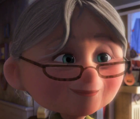
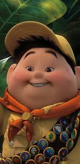
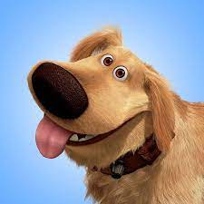
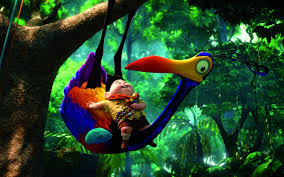
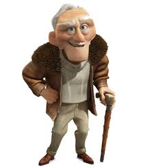
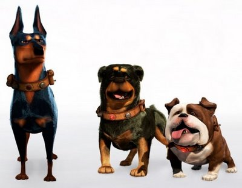

Personagens
Carl
Fredericksen

Carl é um homem de poucas palavras, mas cada ruga em seu rosto conta uma história de amor, perda e redenção. Seu semblante sério e postura rígida escondem um coração partido pela partida de sua amada esposa, Ellie. Ele é como uma fortaleza solitária em um mundo em constante mudança, resistindo às marés do tempo com teimosia e determinação. Cada ruga em seu rosto é uma cicatriz de batalhas travadas e lições aprendidas, cada rugido de sua casa flutuante é um grito de desafio contra a monotonia da vida. Apesar de sua aparência austera, Carl é impulsionado por um amor inabalável por Ellie e uma vontade feroz de realizar seus sonhos, mesmo que isso signifique enfrentar aventuras inimagináveis e desafiar as convenções da sociedade. Ele é um lembrete de que nunca é tarde demais para seguir nossos corações e buscar a felicidade, não importa quão difícil seja o caminho.
Ellie
Ellie é a essência da alegria e da coragem. Seus olhos brilhantes e sorriso cativante irradiam uma energia contagiante, refletindo sua paixão pela vida e pelo desconhecido. Ela é retratada como uma alma livre, com uma fascinação irreprimível pelo mundo ao seu redor. Seus momentos de ternura com Carl são como pinceladas de amor em uma tela vibrante de aventura e esperança. Mesmo após sua partida, sua presença continua a ecoar, guiando Carl em sua jornada de autodescoberta e redenção.
Russell
Russell é uma explosão de energia e bondade. Seus olhos brilham com entusiasmo enquanto ele tenta incansavelmente conquistar o distintivo de "assistente de idosos" para se conectar com Carl e compensar a ausência de seu próprio pai. Ele é como um raio de sol em um dia nublado, trazendo consigo um sorriso constante e uma determinação inabalável. Apesar de sua juventude, ele carrega o peso de responsabilidades que vão além de sua idade, mas isso não diminui sua disposição de ajudar e fazer amigos.
Dug
Dug é a personificação do calor e da lealdade. Seu olhar amoroso e a cauda sempre balançando revelam sua natureza afetuosa e amigável. Ele é como o melhor amigo que você sempre quis ter, sempre pronto para brincar, animar seu dia ou oferecer um ombro (ou melhor, um pata) para chorar. Embora sua mente seja facilmente distraída e suas habilidades linguísticas deixem um pouco a desejar, seu coração é do tamanho de uma montanha, cheio de amor e lealdade por seus amigos.
Kevin
Kevin é uma criatura de beleza e mistério, envolta em penas coloridas e um ar de excentricidade. Seus olhos curiosos e movimentos graciosos revelam uma inteligência e uma alma gentil por trás de sua aparência exótica. Ela é como uma dançarina em um palco, cativando a atenção de todos ao seu redor com sua graça e charme. Embora seu tamanho imponente possa inspirar medo, sua natureza maternal e protetora a torna uma aliada valiosa na jornada de Carl e Russell
Charles Muntz
Charles Muntz é apresentado como um herói caído cuja busca obsessiva por provar a existência de uma criatura rara o transforma em um vilão implacável. Sua determinação fanática o leva a sacrificar sua integridade moral e a vida dos outros, revelando uma crueldade calculada e uma arrogância desmedida. Manipulador e autoritário, Muntz mostra-se disposto a tudo para alcançar seus objetivos, mesmo que isso signifique trair aqueles que o admiravam. No clímax do filme, sua queda final é uma mistura de tragédia e redenção, destacando os perigos da obsessão desenfreada e o preço da ambição descontrolada.
Alfa, Beta e Ômega
Alpha, o líder da matilha, irradia uma aura de autoridade e dominação. Seu porte imponente e olhar penetrante inspiram temor em seus subordinados e respeito relutante em seus oponentes. Beta, por outro lado, é uma montanha de músculos com um coração leal. Sua lealdade a Alpha é inabalável, e sua mordacidade é tão afiada quanto suas presas. Ômega, por sua vez, é uma figura intrigante, com um ar de pompa e sofisticação que contrasta com a brutalidade dos outros cães. Sua presença traz uma camada de ironia e humor à matilha, pois ele parece mais preocupado com sua aparência do que com qualquer outra cois